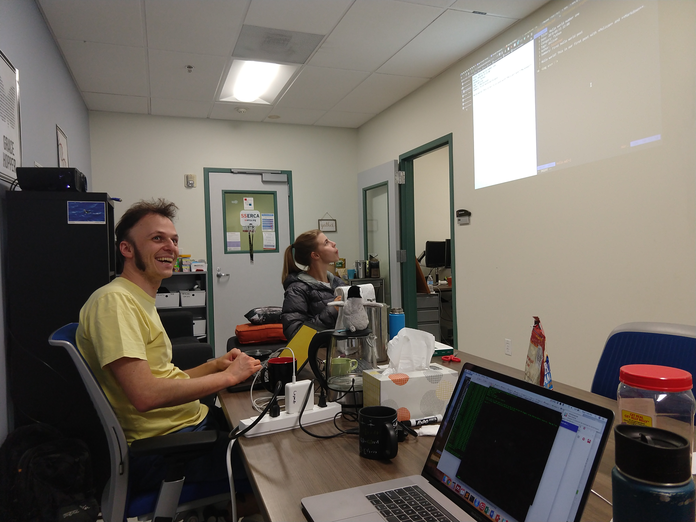

Luiz Irber was gratious in spending time to walk us through how to set up a blog with Pelican, host it on github.io, and have travis-ci test and deploy.
Video:
Some Background
I've had a blog that I started when I was first learning and developing computational skills. Wordpress blogs are great for quickly publishing a post, with capacity for formatting pictures and links to Tweets. At the encouragement of Titus a few years ago during our summer DIBSI workshop, I started taking notes on the online collaborative document site, hackmd.io. This cool site lets you write in markdown and immediately see it rendered. The link can be shared with collaborators, and the document can be exported to .pdf, .html, or .md formats. I started writing all of my notes with markdown. But then wanting to write a blog post with my notes? Manually converting .md documents and code chunks into the online wordpress user interface is tedious.
This week, I casually mentioned that I wanted to migrate from wordpress to a more markdown-friendly format for my blog. Luiz immediately chimed in that Pelican is great! And uses it for his blog. It turns out that Titus' blog and other lab mate, Charles Reid both have their blogs in Pelican as well. One of the many advantages of Pelican is that it is written in Python, unlike Jekyll which is written in Ruby. (I'm more comfortable coding and debugging in Python than in Ruby.) And Charles provided lots of documentation on how to use Pelican! It's great to be in a lab group where people have such useful and encouraging advice.
Tutorial
We started with the tutorial from Charles Reid, which has practice content.
Make a working directory for your blog:
mkdir blog
cd blog/
git init
Get the configuration file, pelicanconf.py:
wget https://raw.githubusercontent.com/charlesreid1/magic-flying-pelican/master/pelican/pelicanconf.py
mkdir content
cd content/
Navigate to some of the example posts and download:
wget https://raw.githubusercontent.com/charlesreid1/magic-flying-pelican/master/pelican/content/posts/hello-world-1.md
Taking a look, we see that each .md post file must have this header:
Title: Hello world number one
Date: 2018-05-13 22:00
Category: Python
Tags: pelican
Author: charlesreid1
Summary: First hello world post
Now we have to install Pelican and markdown. Luiz uses pipenv. This will activate a new virtualenv with pelican and markdown available without messing with dependencies in your computer's $PATH.
pip install --user pipenv
export PATH=~/.local/bin:$PATH
pipenv install pelican markdown
pipenv shell
Now we need some Pelican themes. (All themes are downloaded, so put them in a different location.)
cd ../../
git clone --recursive https://github.com/getpelican/pelican-themes
cd pelican-themes
pelican-themes -i bootstrap
Change the path location of the theme in the pelicanconf.py file:
cd blog
cp -a ../pelican-themes/bootstrap theme
vi pelicanconf.py
Specify the path where the theme will be saved to (this was copied with the command above).
THEME = './theme'
Change other information, such as your name and site name and site url in the pelicanconf.py file.
wget https://raw.githubusercontent.com/charlesreid1/magic-flying-pelican/master/pelican/content/posts/hello-world-1.md
mkdir posts
mv hello-world-1.md posts/
mv hello-world-1.md 2018-09-05.md
vi 2018-09-05.md
Then run:
pelican
This will produce output like this:
WARNING: Removed extraneous trailing slash from SITEURL.
Done: Processed 2 articles, 0 drafts, 0 pages and 0 hidden pages in 0.55 seconds.
Check how it looks:
python -m http.server
(Go to http://localhost:8000/output/)
At anytime, you can remove the output/ directory, because this is what is generated when running pelican.
rm -rf output/
Hosting on github.io
Add/commit changes, then set up a repository on GitHub (don't initialize with README.md) to add as remote.
git add --all
git status
git commit -m "first commit"
git remote add origin https://github.com/ljcohen/blog.git
git push -u origin master
Install ghp-import:
pipenv ghp-import
pipenv install ghp-import
git status
git diff
ghp-import
which ghp-import
ghp-import --help
ghp-import pelican
pelican
ghp-import output
git branch
ghp-import -p output
Using travis-ci
Make a travis .yml file:
vi .travis.yml
With this content:
language: python
dist: xenial
python: '3.6'
branches:
only:
- master
install:
- pip install pipenv
- pipenv install
script:
- pipenv run pelican
deploy:
provider: pages
skip-cleanup: true
local-dir: output
github-token: $GITHUB_TOKEN # Set in the settings page of your repository
on:
branch: master
Add/commit:
git add .travis.yml
git commit -m "added travis-ci"
git push -u origin master
- Go to travis-ci and login to GitHub.
- Set up your personal access tokens on your GitHub account.
- Go to 'Settings', 'Integration & services' in the GitHub repository to configure Travis CI with a key to give push access.
- Add the repository to Travis CI: https://travis-ci.com/ljcohen/blog
You're done!
Now add more posts!
vi 2018-09-05_b.md
vi 2018-09-05_b.md
git add 2018-09-05_b.md
git commit -m "new post"
git push
vi pelicanconf.py
Travis CI will automatically run pelican and push to github.
With Pelican, you can also import an existing site, like from WordPress.
Thank you, Luiz!

Comments
comments powered by Disqus